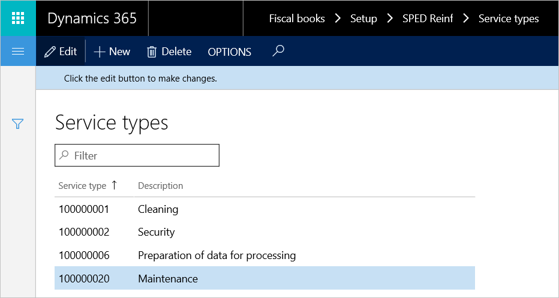
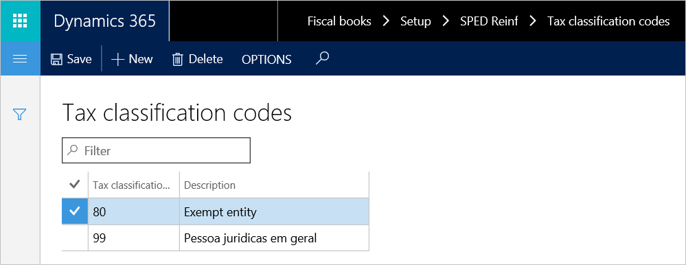
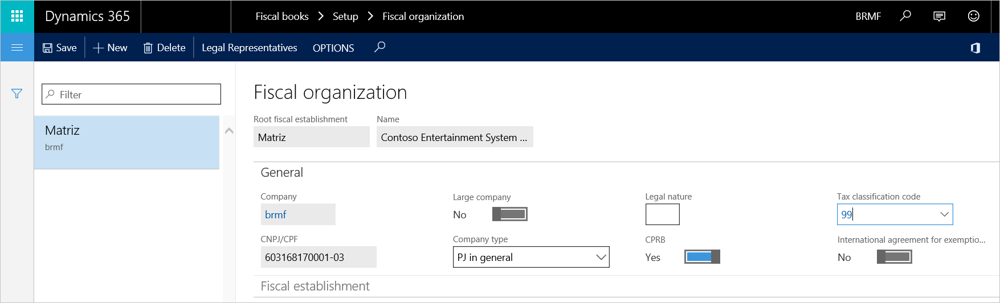
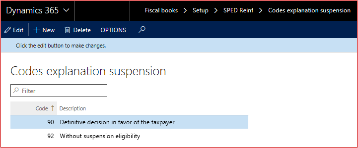
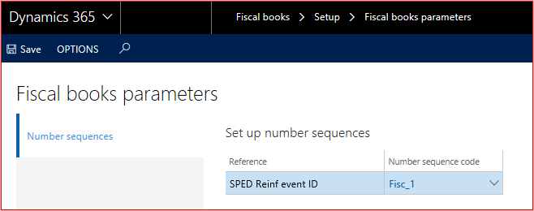

Set up fiscal books
This topic explains how to set up the Fiscal books module to generate and issue events to the tax authorities.
Set up service types
The service type table represents table 06. The tax authorities have established this table to classify the services that are provided, based on the assignment of labor. A detailed list of available values is available on the public digital bookkeeping system (SPED) website.
Go to Fiscal books > Setup > SPED Reinf > Service types.
Select New.
Enter a classification code that has been established by the tax authorities, and then enter a description.

After the list of service types is created, the service types must be assigned to service codes. Go to Inventory management > Setup > Fiscal information > Service code, and then, for each service, assign the related service type.
Set up tax classification codes
- Go to Fiscal books > Setup > SPED Reinf > Tax classification codes.
- Enter the available classification types.

This information is assigned to the fiscal organization and can be found on the General FastTab of the Fiscal organization page (Fiscal books > Setup > Fiscal organization).

Set up codes explanation suspension
- Go to Fiscal books > Setup > SPED Reinf > Codes explanation suspension.
- Set up the codes that are used in event R-1070 when suspension of withholding applies. These codes are assigned on the Administrative and judicial process page (Fiscal books > Periodic > SPED Reinf > Administrative and judicial process).

Set up acquisition type determination
This setup is used to determine the agriculture acquisition type of incoming fiscal documents that are reported in the indAquis tag for event R-2055.
Go to Fiscal books > Setup > SPED Reinf > Acquisition of rural production.
Define the classification of fiscal documents, based on the following criteria:
- Vendor account: All, group, or table
- CFOP: All, group, or table
- Fiscal classification
Set up GILRAT and SENAR taxes
GILRAT: The tax contribution of the degree of incidence of Labor disability resulting from occupational environmental risks. SENAR: The tax contribution related to rural production.
- Go to Fiscal books > Setup > SPED Reinf > GILRAT tax codes or SENAR tax codes.
- Identify the sales tax codes that are used to represent GILRAT and SENAR taxes. In the definition of the sales tax codes, the tax type should be set to Other. The amount of these taxes is used in the vlrRatDescPR and vlrSenarDesc tags for event R-2055.
Vendor setup
- Go to Accounts payable > Vendors > All vendors.
- Select a vendor.
- On the Fiscal information tab, set up Reinf taxation over payroll. This new attribute determines the type of taxation, because this information is required in the indOpcCP tag for event R-2055.
Set up Fiscal books parameters
- Go to Fiscal books > Tax statements parameters > SPED Reinf > SPED Reinf parameters.
- On the General tab, select SPED Reinf version.
- Select the environment type and the status of the fiscal organization.
- Go to Fiscal books > Setup > Fiscal books parameters.
- On the Number sequences tab, set up the number sequence for events R-2010, R-2020, and R-2055.

Note
If the number sequences weren't initialized during the setup checklist for KB installation, you can generate them by using a wizard. To open the wizard, go to Organization administration > Number sequences > Number sequences, and select Generate. You can then configure the related number sequence:
- Area: Fiscal books
- Reference: SPED-Reinf event ID